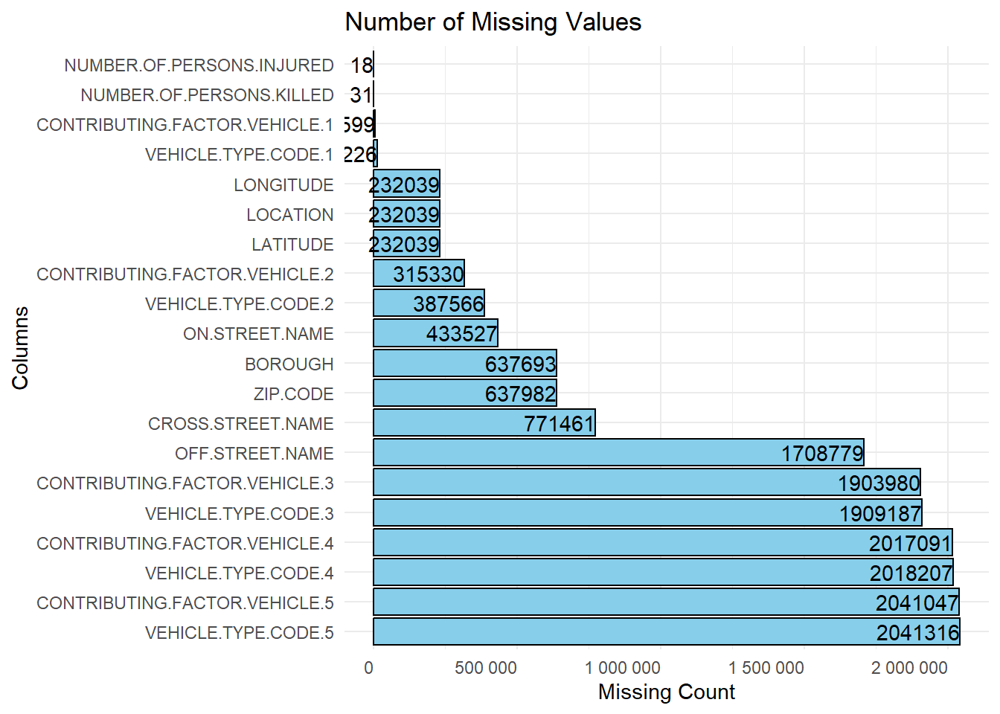

Code
# read the data file
data <- read.csv("collisions.csv")The data is taken from the official data catalog of the United States government (data.gov). We used data about the collisions, people and the vehicles involved. These have the same Collision_ID present as a foreign key in the people and vehicles dataset.The links are below:
Collisions Dataset People Dataset Vehicles DatasetThe Motor Vehicle Collisions crash data contains details on the crash events. Each row represents a crash event. It contain information from all police reported motor vehicle collisions in NYC. The police report (MV104-AN) is required to be filled out for collisions where someone is injured or killed, or where there is at least $1000 worth of damage.
It should be noted that the data is preliminary and subject to change when the MV-104AN forms are amended based on revised crash details. The most accurate, up to date statistics on traffic fatalities can be found on NYPD Motor Vehicle Collisions page, which is updated weekly.
The data includes information about the following:
One problems with the data is that there are a lot of missing values in many features that need to be handled.
We downloaded the data and read it locally as a csv file to analyse it.
The dataset comprises a comprehensive array of variables that align with the research questions outlined in the introduction. The information provided within each column allows for a nuanced exploration of the factors influencing car crash collisions in the city. Let’s break down how each variable contributes to answering the research questions:
Geographical Analysis:
BOROUGH: This categorical variable indicates the borough where the collision occurred. It will be instrumental in identifying specific areas with a higher incidence of car crashes, facilitating an analysis of the spatial distribution of collisions within the city.
ZIP CODE: The postal code of the incident occurrence provides a more granular geographical perspective, enabling a detailed examination of collision patterns at the neighborhood level.
LATITUDE and LONGITUDE: These coordinates offer precise spatial information, facilitating mapping and spatial analysis to pinpoint exact locations where collisions are more prevalent.
LOCATION: The latitude and longitude pair in this variable further reinforces the spatial context, allowing for spatial visualization and analysis.
ON STREET NAME and CROSS STREET NAME: These variables offer insights into the specific streets and intersections where collisions occur, contributing to the assessment of road structure and design.
Temporal Analysis:
CRASH DATE and CRASH TIME: These variables provide a temporal dimension to the analysis, allowing for the identification of weekly or daily patterns in the occurrence of car crashes. Examining the temporal aspect is crucial for understanding if there are specific times or days when collisions are more likely. Causal Factors and Characteristics:
CONTRIBUTING FACTOR VEHICLE 1-5: These categorical variables capture the factors contributing to each collision, offering valuable information on the reasons behind crashes. Analyzing these factors will aid in understanding whether issues such as distracted driving or weather conditions are prevalent.
NUMBER OF PERSONS INJURED/KILLED, NUMBER OF PEDESTRIANS INJURED/KILLED, NUMBER OF CYCLISTS INJURED/KILLED, NUMBER OF MOTORIST INJURED/KILLED: These numerical variables provide a quantitative overview of the impact of collisions, helping to gauge the severity of incidents.
VEHICLE TYPE CODE 1-5: These variables categorize the types of vehicles involved in each collision. Examining the vehicle types can contribute to understanding collision patterns based on the characteristics of the vehicles.
Identification and Tracking:
COLLISION_ID: This unique identifier serves as the primary key for the dataset, allowing for the tracking and analysis of individual collision records.
In summary, the dataset’s rich array of variables facilitates a comprehensive exploration of the spatial, temporal, and causal dimensions of car crash collisions in the city. By leveraging these variables, we can derive meaningful insights into the factors influencing collision patterns and formulate informed recommendations for targeted interventions and policy improvements.
The data has a lot of missing values in multiple columns that we will have to handle. The following bar graph shows the total number of missing values in columns that have missing values.
# read the data file
data <- read.csv("collisions.csv")library(dplyr)
Attaching package: 'dplyr'The following objects are masked from 'package:stats':
filter, lagThe following objects are masked from 'package:base':
intersect, setdiff, setequal, unionlibrary(ggplot2)
library(stringr)
# converting the empty char cells to NA
data <- mutate_all(data, ~ifelse(is.character(.x) & nchar(.x) == 0, NA, .x))
missing_values <- colSums(is.na(data))
missing_values <- missing_values[missing_values > 0]
# Convert the result to a data frame
missing_df <- data.frame(
column = names(missing_values),
missing_count = missing_values
)
# Create a bar graph
ggplot(missing_df, aes(x = reorder(column, -missing_count), y = missing_count)) +
geom_bar(stat = "identity", fill = "skyblue", color = "black") +
geom_text(aes(label = missing_count), hjust = 1, color = "black") +
labs(title = "Number of Missing Values",
x = "Columns",
y = "Missing Count") +
theme_minimal() +
coord_flip() +
theme(axis.text.x = element_text(angle = 0, hjust = 1)) +
scale_y_continuous(labels = scales::number_format())